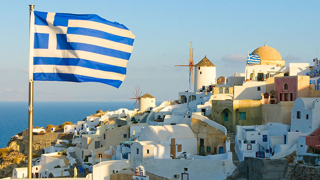
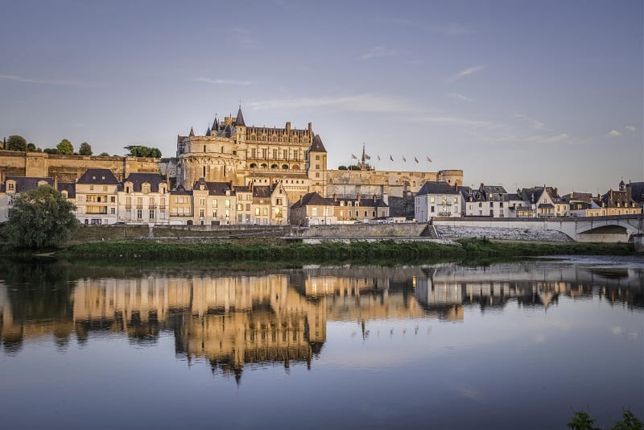
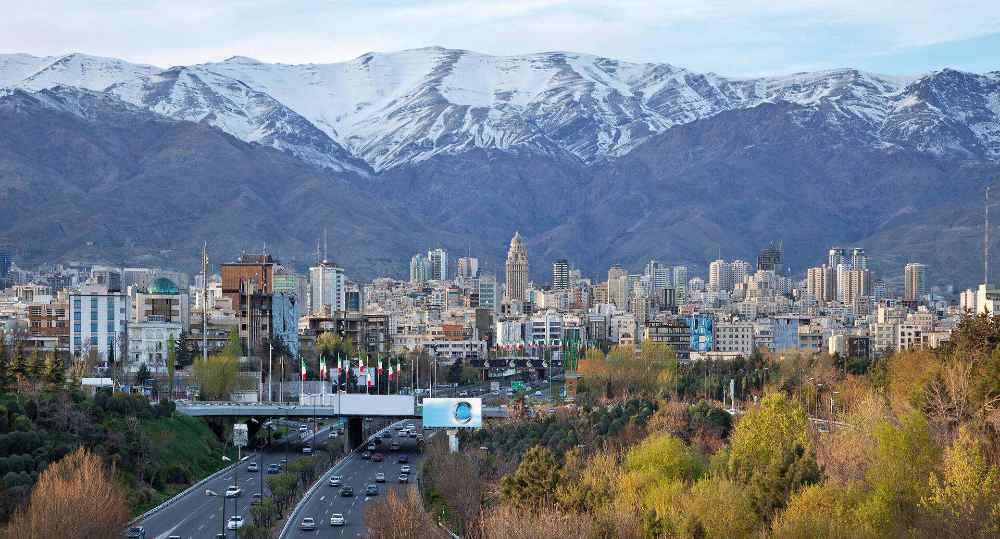
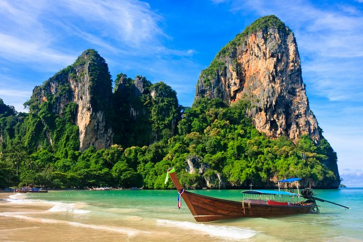
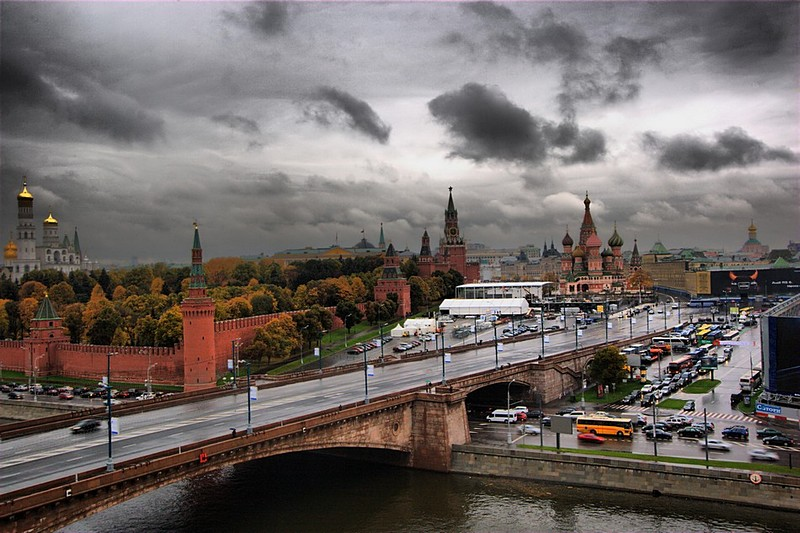

המלצות המומחים

יוון
יוון היא המקום המושלם למי שמחפש שילוב בין חופים ים מים צלולים לבין אוכל פשוט , טרי ומשגע
הטיפ שלנו :אל תסתפקו רק באתונה או באיים המפורסמים - תשכרו רכב ותסעו לכפרים הקטנים שם נמצא הקסם האמיתי של יוון

צרפת
צרפת היא הרבה מעבר לפריז - היא מסע בלתי נגמר בין כרמים ירוקים , כפרים ציוריים ואוכל שפשוט עושה טוב על הלב
הטיפ שלנו : אל תפחדו לסטות מהמסלול המוכר , עצרו במאפייה מקומית בכל עיירה שתעברו בה ותנו לריח הלחם הטרי להוביל אתכם למקומות

איראן
היעד שבו השטיחים הפרסיים והתה תמיד חם עם נופים מרהיבים
הטיפ שלנו:אם אתם מחפשים יעד שאף אחד מהחברים שלכם לא העלה ממנו סטורי זה המקום עבורכם , רק אל תשאלו אותנו איך מגיעים לשם , אנחנו אחאראיםרק על החלק של ההמלצות את השאר תגלו לבד

תאילנד
תאילנד היא הבית השני של כל מי שצריך חופש אמיתי , עם שילוב בלתי נגמר של חופים בטורקיז , שייקים מפירות טרופיים טריים ומסאגים שעושים פלאים לנשמה
הטיפ שלנו:אל תתקעו רק בנקודות המוכרות לכולם , תמצאו אי קטן ומרוחק , תשכרו אופנוע ותנו לעצמך ללכת לאיבוד כי זה כל הכיף

רוסיה
רוסיה היא לא רק יעד , אלא חוויה עוצמתית שנכנסת ישר לורידים - מהארמונות המפוארים של סנט פטרסבורג ועד לכיכר האדומה שמרגישה כמו סט של סרט היסטורי
הטיפ שלנו:אל תנסו להספיק הכל בפעם אחת, המדינה הזו ענקית! פשוט תבחרו עיר אחת, תתלבשו חם , ותנו לאווירה המיוחדת לעטוף אתכם. ואם אתם שם, אל תעזבו בלי לטעום מרק בורשט אמיתי במקום מקומי – זה הלב של רוסיה בצלחת.